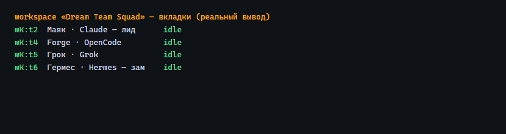
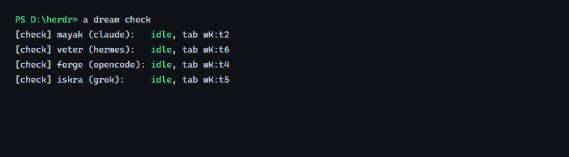

Вкладки workspace

Реальный вывод. Живые статусы — `a dream check`.
Роли
mayak · claude
Маяк — лид
Принимает цель, строит план, распределяет задания, принимает итог. Карточки канбана из to-do.
veter · hermes
Гермес — заместитель
Аудит и ревью чужими глазами, координация в отсутствие Маяка.
forge · opencode
Forge — тяжёлый код
Реализует назначенное в своей ветке, проверяет сборку, PR к основной.
iskra · grok
Грок — мост
Быстрый поиск, черновики, связь между агентами. Финал — за лидом.
Команды
a dream all # поднять всех четверых a dream mayak # только Маяк a dream check # статусы четверых a dream mayak <папка-проекта> # запуск в папке проекта
Скриншоты

Только TUI: реальные выводы.
Что внутри
| Файл | Назначение |
|---|---|
docs/ARCHITECTURE.md | Роли, маршрут, Git-цикл |
docs/SETUP.md | Пошаговая сборка со скриншотами |
agents/ | Рабочие места mayak, veter, forge, iskra |
examples/wrappers/ | Движок dream.js + dream.cmd |
LICENSE | MIT |